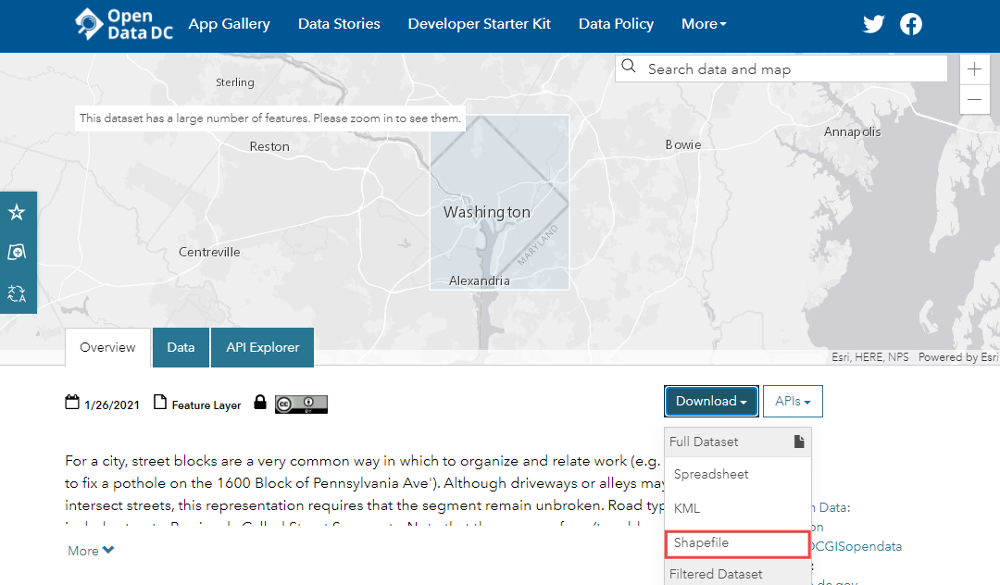
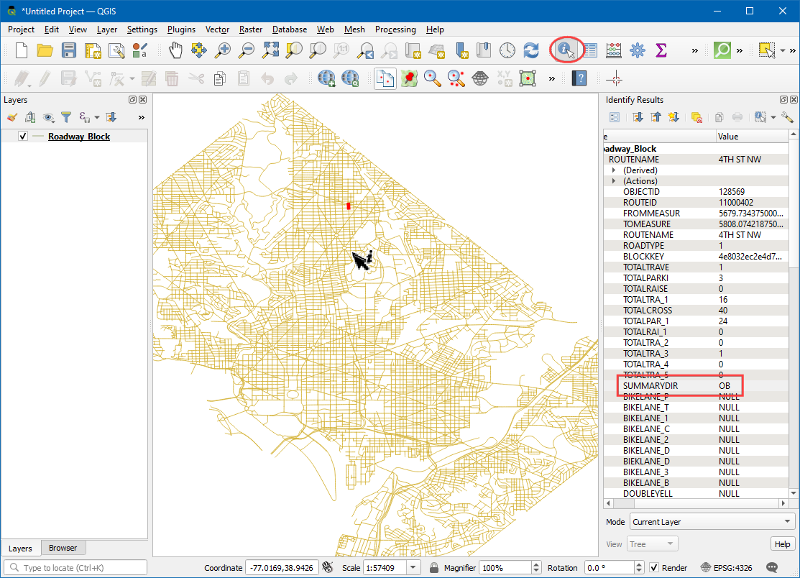
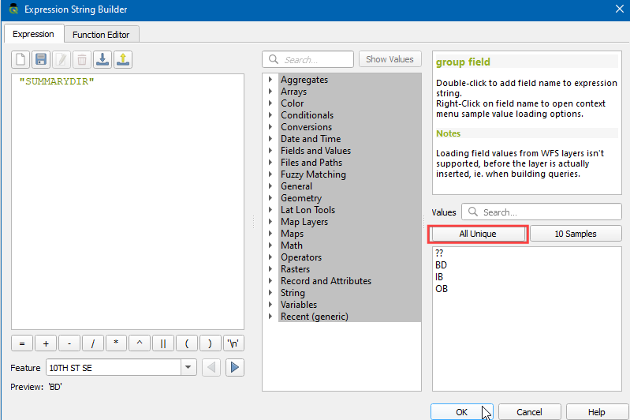

Ujaval Gandhi
Ujaval GandhiOsnovna vizuelizacija i rutiranje mreže (QGIS3)¶
Kreiranje, vizuelizacija i upravljanje mrežama je važan deo GIS-a. Mnoge vrste fizičke infrastrukture, kao što su putevi, železnice, komunalne pruge, mogu se modelirati kao mreže sa linijama i čvorovima - sa svojstvima koja su im pridružena. U ovom tutorijalu ćemo naučiti kako se putne mreže obično modeliraju i primeniti neke tehnike stilizovanja za vizuelizaciju svojstava rutiranja. Takođe ćemo koristiti ugrađene alate QGIS3 za analizu mreže kako bismo pronašli najkraći put izmeđju 2 tačke duž mreže.
Pregled zadataka¶
Uzećemo sloj blokade puta za Vašington, vizualizovati povezanost i izgraditi mrežu kako bismo pronašli najkraći put između bilo koje 2 tačke u gradu.
Druge veštine koje ćete naučiti¶
Kako koristiti nadjačanja definisana podacima za poravnavanje simbola strelice na osnovu pravca linije.
Dobijte podatke¶
Vlada Distrikta Kolumbije slobodno deli stotine skupova podataka na „Katalogu otvorenih podataka <https://opendata.dc.gov/>`_.
Preuzmite podatke Roadway Block koje deli DCGISopendata kao shapefile.
Radi lakšeg snalaženja, možete direktno preuzeti kopiju skupova podataka sa donjih linkova:
Izvor podataka: [DCOPENDATA]
Procedura¶
Pronađite preuzetu datoteku
Roadway_Block-shp.zipu panelu Pregledač. Proširite je i prevucite datotekuRoadway_Block.shpna platno.

Videćete novi linijski sloj pod nazivom „Roadway_Block“ dodat na panel :guilabel:„Slojevi“. Ovaj sloj predstavlja svaki put u Vašingtonu. Izaberite alatku :guilabel:„Identifikuj“ u :guilabel:„Traci sa alatkama Atributi“. Kliknite na bilo koji segment puta da biste videli koji su mu atributi priloženi. Postoje standardni atributi kao što su naziv rute, tip puta itd. Postoji atribut pod nazivom „SUMMARYDIR“. Ovo je važan atribut za rutiranje jer određuje da li je segment dvosmeran ili jednosmeran. Sadrži 4 različite vrednosti. „BD“ („Oba smera“) za dvosmerne ulice. „OB“ („Izlaz“) za jednosmerne ulice gde je saobraćaj dozvoljen u smeru linije (od početne do krajnje tačke) i „IB“ („Ulaz“) za jednosmerne ulice gde saobraćaj teče u suprotnom smeru od linije. Postoji i vrednost „??“ gde ćemo pretpostaviti dvosmeran saobraćaj. Sada ćemo koristiti informacije iz tog atributa da prikažemo strelicu na jednosmernim ulicama.

Kliknite na dugme Otvori panel za stilizovanje sloja u panelu Slojevi. Izaberite renderer
Rule-basediz padajućeg menija.

Napravićemo novi stil sa filterom samo za jednosmerne puteve. Kliknite na dugme Dodaj pravilo +.

U dijalogu Izmeni pravilo kliknite na dugme Izraz.

U dijalogu Kreator izraznih nizova, proširite odeljak Polja i vrednosti u srednjem panelu. Izaberite atribut
SUMMARYDIRi kliknite na Sve jedinstvene u desnom panelu. Pojaviće se 4 vrednosti o kojima smo ranije govorili. Imati ove vrednosti ovde kao referencu pomaže pri kreiranju izraza. Takođe, možete dvaput kliknuti na bilo koju vrednost da biste je dodali izrazu.

Cilj je kreirati izraz koji bira sve jednosmerne ulice. Unesite sledeći izraz i kliknite na OK.
"SUMMARYDIR" in ('IB', 'OB')
Zatim, promenite Tip sloja simbola na
Linija markera.

Izaberite „na centralnoj tački“ pod :guilabel:„Položaj markera“.

Kliknite na simbol „Jednostavan marker“. Pomerite se nadole i izaberite marker „popunjeni_vrh_strelice“. Videćete da se simbol u obliku strelice sada pojavljuje na jednosmernim ulicama. Ali sve one pokazuju u jednom pravcu, dok znamo da naš filter sadrži puteve u više pravaca. Možemo dodatno precizirati simbole pomoću zamene definisane podacima za vrednost Rotacija.

Kliknite na dugme Prevazilaženje definisanih podataka pored Rotacija.
Možemo postaviti uslovni izraz koji vraća različite vrednosti rotacije u zavisnosti od jednosmernog smera. Rotacija od 180° stepeni za put sa suprotnim smerom će učiniti smer savršenim. Na ovaj način ćemo učiniti da se putevi sa atributom „IB“ rotiraju za 180°, tako da će svi putevi imati ispravan smer protoka saobraćaja. Unesite sledeći izraz i kliknite na OK.
if( "SUMMARYDIR" = 'IB', 180, 0)
Sada ćete videti vrhove strelica poravnate sa ispravnim smerom puta. Da bismo stil održali urednim, biramo da prikazujemo strelice samo na jednosmernim ulicama. Za neoznačene ulice se pretpostavlja da su dvosmerne. Sada kada smo pravilno stilizovali mrežu, možemo da izvršimo neke analize. Idite na .

Potražite i pronađite algoritam . Dvaput kliknite da biste ga pokrenuli.

U dijalogu Najkraća putanja (od tačke do tačke), izaberite
Roadway_Blockkao Vektorski sloj koji predstavlja mrežu. Zadržite Tip putanje za izračunavanje kaoNajkraća. Zatim, treba da izaberemo početnu i krajnju tačku. Možete kliknuti na dugme … i kliknuti na bilo koju tačku na mreži na platnu. Ako želite da replicirate rezultate iz ovog tutorijala, možete uneti-76.99730092166396,38.887624846748984kao Početnu tačku i-76.99154831062152,38.89151000569929kao Krajnju tačku. Proširite odeljak Napredni parametar. IzaberiteSUMMARYDIRkao polje za smer. Morate biti upoznati sa vrednostima jednosmernog smera za protok saobraćaja napred i nazad. UnesiteOBkao Vrednost za smer napred iIBkao Vrednost za smer nazad. Zadržite ostale opcije na njihovim podrazumevanim vrednostima i kliknite na Pokreni.

Algoritam će koristiti geometriju sloja i date parametre za izgradnju mrežnog grafa. Ovaj grafik se zatim koristi za pronalaženje najkraće putanje između početne i krajnje tačke. Kada se algoritam završi, videćete novi sloj „Najkraća putanja“ dodat na panel Slojevi koji prikazuje najkraću putanju između početne i krajnje tačke.

Videćete da postoji mnogo mogućih putanja između početne i krajnje tačke. Ali s obzirom na ograničenja mreže - kao što su jednosmerne, rezultat je najkraća moguća putanja. Uvek je dobra ideja da potvrdite svoju analizu i pretpostavke. Jedan jednostavan način da se to potvrdi jeste da koristite uslugu mapiranja treće strane da biste videli da li se njihovi rezultati podudaraju sa onima koje smo mi izveli. Evo najkraće putanje koju su predložile Google mape <https://goo.gl/maps/XwTXTkvuaCuteocr8>`_ između istih početnih i krajnjih tačaka. Kao što vidite, preporučena najkraća ruta se tačno podudara sa našim rezultatima - što potvrđuje našu analizu.

If you want to give feedback or share your experience with this tutorial, please comment below. (requires GitHub account)